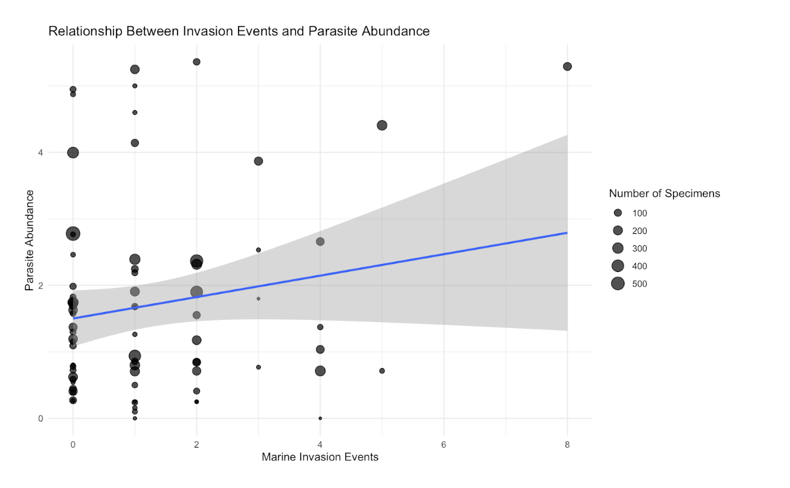

Parasite Ecology & Invasive Species Research
During my time at the Wood Lab, I have gained hands-on experience in lionfish dissection and parasite identification, specifically looking for parasite presence within invasive species. My work also involves developing R-based research workflows.
Currently, I am conducting an independent research project investigating the relationship between parasite-invasive species dynamics. While this research is ongoing and being prepared for co-authorship, you can view my completed deliverables for the lab below.
Project Deliverables

Parasitology Learning Module Illustrations
I'm co-authoring an elementary learning module for parasitology, where I was responsible for creating the scientific illustrations. View here my collection of drawings used to teach complex ecological concepts to young students.

Unwelcome Guests and Their Even Smaller Guests
I compoleted an R-based data analysis project investigating whether biological invasions in Puget Sound are associated with long-term changes in native parasite communities using historical museum records.